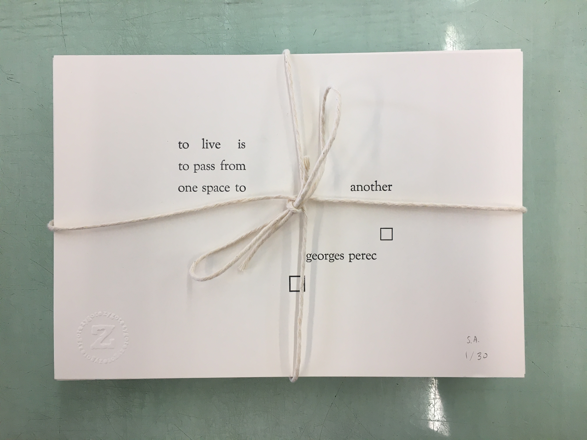
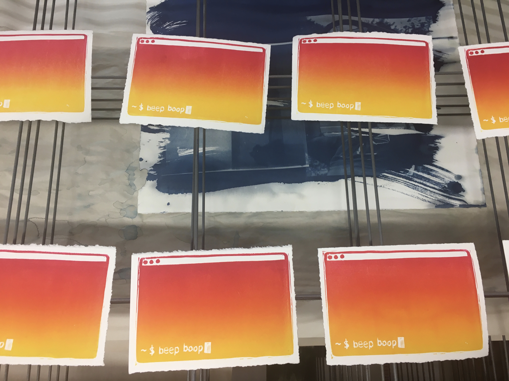
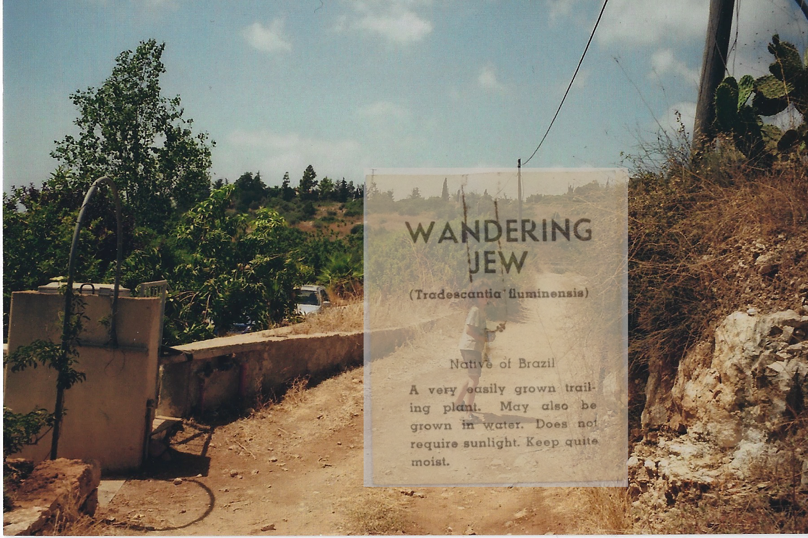

An Abridged Portfolio
Text & Image
Printmaking (Letterpress & Linocut)

I choose to walk here. And to draw this circle. — Adrienne Rich.
to live is to pass from one space to another — georges perec.
A smattering of rainbow-rolled prints depicting a computer terminal with the words "beep boop".

A scattered set of prints depicting an armchair and the words "This room is not soundproof."


"Blood Makes Good Paint," a possible fifties-era feature film (zinc engraving amalgam), plus the corresponding inked press.

Domestic zinc engraving amalgam, featuring advertisement illustrations.
Collage & zines
-
Library Scans: Collaged Zine on The Providence Public Library

A story about the Providence Public Library, told through vignettes and flatbed scans.
-
Legends of the Wandering Jew
Pictures of my Jewish family collaged with writings about the legend of the Wandering Jew, sourced from the Wandering Jew Collection at the Brown University archives.
-
One Zine, Eight Pages
A Hanukkah Zine.
Selected Tech Criticism
-
Interview with Sean Michaels, author of Do You Remember Being Born?
Kernel Magazine—2024 (Forthcoming)
-
Beyond + Escape
Kernel Magazine—2022
Long essay: A body in pain and computation. A piece on recovering from a concussion, uncovering academic ableism, and forging a path through disability studies for a better computing discipline.
-
Review of Wendit Tnce Inf / Allison Parrish
Reboot—2022
Letterpress-printed AI-generated text: a serious review.
-
Robots Write Experimental Poetry
Reboot—2021
No, GPT's poetry doesn't make me think it's sentient: Explaining experimental poetic traditions for the discerning technologist.
Literary Translation
-
The Hand of the Hand*, Laura Vazquez
Translation from French to English
Ugly Duckling Presse, 2025
Excerpt published in Asymptote, 2022.
-
Le Rêve d'un Langage Commun*, Adrienne Rich
Translation from English to French
L'Arche Éditeur, 2025
-
The Happy End/Bienvenue à Tous*, Mónica de la Torre
Translation from English to French
Joca Seria, 2022
* indicates translation with Limited Connection Collective
Miscellany
Poems from a University Quarantine
A quarantine blog and literary series. More information about our work can be found at this link.
For more general information about Shira, visit shiraab.github.io